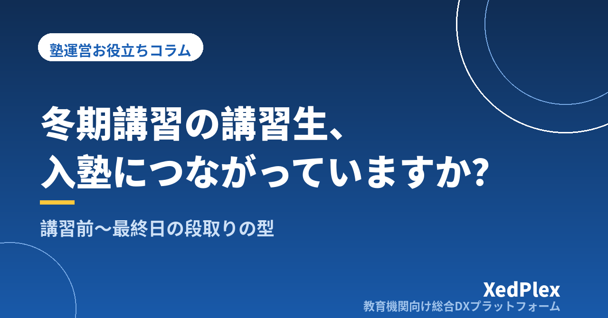

冬期講習の講習生を入塾につなげるには？｜講習前の準備・期間中の記録・最終日の面談と案内を型にする

冬期講習の申込が少しずつ入り始めるこの時期。「講習には来てくれたのに、1月からの入塾にはつながらなかった」という経験をお持ちの塾長は少なくないはずです。講習の授業そのものには手応えがあったのに、最終日に「ご検討ください」とパンフレットを渡して終わってしまい、その後は連絡が途切れる。年明けに電話をしようと思っているうちに、他の塾に決まっていた──。
講習生が入塾しない理由は、授業の質だけではありません。多くの場合、「入塾を判断するための材料」と「判断するタイミング」が保護者に届いていないことが原因です。保護者は講習の数日間、子どもの様子を家庭でしか見ていません。塾で何をして、何が分かって、1月から通うと何が変わるのかが伝わらなければ、判断は先送りになります。
この記事では、冬期講習の講習生（外部生）を通常授業への入塾につなげるための流れを、講習前・講習中・最終日・講習後の4つの段階に分けて「型」にする方法を紹介します。季節講習の申込・請求の管理については季節講習の申込管理の記事で整理しているので、あわせてご覧ください。
講習生が入塾につながらない3つの理由
講習後に入塾しなかった家庭の事情はさまざまですが、塾側で手を打てる理由はおおむね次の3つに整理できます。
| 理由 | 保護者側で起きていること | 塾側でできること |
|---|---|---|
| 判断材料がない | 講習中に何をしたのか、どこが課題なのかが分からず、続ける意味を判断できない | 講習中の記録を残し、最終日に具体的に伝える |
| 判断のきっかけがない | 「良かった」とは思っているが、いつまでに決めればよいか分からないまま年が明ける | 案内の期限と、1月からの具体的な通い方を提示する |
| 不安が解消されていない | 料金・曜日・部活との両立・学校の進度との関係などの疑問を聞けずにいる | 面談の場を設け、よくある質問への答えを用意しておく |
逆に言えば、この3つを講習の流れの中に組み込んでおけば、塾長が営業トークを頑張らなくても、保護者が自然に判断できる状態をつくれます。ポイントは「最終日に頑張る」のではなく、「初日から準備しておく」ことです。
講習前：申込の時点で「入塾の検討材料」を集めておく
講習の申込を受けた段階で、講習生ごとに次の情報を把握しておくと、講習中の指導も最終日の面談も的を絞れます。
- 講習に申し込んだ理由：苦手科目の克服、受験準備、今の塾からの乗り換え検討、友人の紹介など
- 今の学習状況：通っている塾の有無、学校の定期テストの様子、家庭学習の習慣
- 1月以降の予定：部活・習い事の曜日、通塾できそうな曜日と時間帯
- 保護者の連絡手段と連絡してよい時間帯
これは申込用紙やフォームに「よろしければお書きください」という形で数項目加えるだけで集められます。電話で申込を受ける場合も、聞く項目をメモの型にしておけば聞き漏れを防げます。
講習初日には、短時間で今の理解度を確かめる診断や確認問題を用意しておくと、講習の目標設定にも最終日の報告にも使えます。入塾時の学力把握の考え方は入塾時に生徒の学力・つまずきを把握する方法で詳しく紹介しています。
講習中：毎回の記録が最終日の「説得力」になる
授業後に3行だけ残す
講習生の記録は、在籍生と同じように授業ごとに残しておきます。長い文章は必要ありません。次の3行で十分です。
- 今日扱った単元・内容
- できたこと（具体的に。例:「一次関数の式を、2点の座標から自分で求められた」）
- つまずいたこと・次回の課題
担当講師が複数いる場合も、この3行の型をそろえておけば、最終日に塾長がまとめるときに困りません。記録の書き方は保護者に伝わる指導報告書の書き方も参考になります。
講習の途中で一度、保護者に様子を伝える
講習の中盤に、短いメッセージで様子を伝えておくと、最終日の案内が「突然の営業」に感じられにくくなります。たとえば次のような内容です。
大切なのは、褒め言葉だけで終わらせず、課題と次にやることをセットで伝えることです。保護者にとっては「この塾は子どもをよく見てくれている」という判断材料になります。在籍生と同じく、連絡は多すぎても負担になるため、講習期間中は中盤と最終日の2回程度を目安にするとよいでしょう。連絡頻度の考え方は保護者連絡の適切な頻度で整理しています。
最終日：報告と面談で「判断できる状態」をつくる
講習のまとめを1枚にする
最終日には、講習の成果と課題を1枚にまとめて保護者に渡します。テンプレートにしておけば、講習生が何人いても作成の負担は大きくなりません。
| 項目 | 書く内容の例 |
|---|---|
| 講習で扱った内容 | 単元名・回数 |
| 初日と最終日の比較 | 初日の確認問題で間違えた箇所が、最終日にどうなったか |
| 見えてきた課題 | 講習中に分かったつまずきの傾向（計算・読解・解き直しの習慣など） |
| 1月からのおすすめの進め方 | 課題に対して、どの曜日・どの科目で何をするとよいか |
| 入塾のご案内 | 料金・曜日・開始日・申込方法と期限 |
「1月からのおすすめの進め方」は、入塾を前提にした押し付けではなく、家庭で取り組む場合のアドバイスも添えると、保護者が構えずに読めます。そのうえで「塾で一緒に進める場合はこの形です」と提示すれば、自然な流れで案内できます。
短い面談の時間を用意する
可能であれば、最終日の授業後やお迎えの時間に10〜15分程度の面談枠を設けます。全員と面談するのが難しい場合は、希望者に日時を選んでもらう形でもかまいません。面談では、まとめの1枚に沿って話したうえで、次のような質問によくある答えを用意しておくと落ち着いて対応できます。
- 週に何回、どの曜日に通えるか（部活との両立）
- 月謝のほかにかかる費用（教材費・講習費など）
- 学校の進度や定期テストに合わせた対策をしてもらえるか
- 欠席したときの振替はできるか
面談の準備を短くするコツは保護者面談の準備を1時間で終わらせる方法で紹介しています。
講習後：案内の期限と、年明けの連絡を決めておく
案内には期限を書く
「いつでもお待ちしています」という案内は親切に見えますが、保護者にとっては判断を先送りする理由になります。「1月の授業開始に間に合わせるには〇日までにお申し込みください」のように、塾側の準備の都合として期限を伝えると、押し付けがましくなりません。席数や講師の担当枠に限りがある場合は、その事情も正直に伝えましょう。満席時の考え方は個人塾の定員の決め方とキャンセル待ちで整理しています。
連絡の予定を先に決めておく
講習が終わった直後は、年末の業務や受験生の直前対応と重なり、講習生へのフォローが後回しになりがちです。講習が始まる前に、次のような連絡の予定をカレンダーに入れておきます。
| 時期 | 連絡の内容 |
|---|---|
| 講習最終日 | まとめの1枚と入塾案内を渡す。面談の希望を聞く |
| 最終日の数日後 | お礼と、面談に来られなかった家庭への補足（質問があれば受け付ける旨） |
| 案内の期限の少し前 | 1月の開始日と申込期限の再案内（一度だけ） |
| 期限後 | 入塾しなかった家庭は、本人・保護者の同意の範囲で次の講習案内の対象として記録しておく |
再案内は一度までにとどめ、しつこい連絡にならないよう注意します。入塾しなかった家庭も、春期講習や新学年のタイミングで改めて検討してくれることがあります。講習生の情報を「誰が・いつ・何を受講し、どういう返事だったか」まで記録しておけば、次の講習の案内も的を絞れます。講習生の入塾率を毎回振り返る習慣は、塾長が毎月見るべき5つの数字の考え方とも相性がよいでしょう。
まとめ
講習生を入塾につなげるために必要なのは、最終日の熱心な勧誘ではなく、講習の初日から最終日までの記録と、それを保護者に届ける段取りです。申込時に数項目の情報を集め、授業ごとに3行の記録を残し、中盤と最終日に様子を伝え、期限つきの案内と年明けの連絡予定を決めておく。この流れを一度型にしておけば、冬期講習だけでなく、春期講習や夏期講習でも同じように使い回せます。体験授業から入塾までの流れについては体験授業から入塾につながらない塾の共通点もあわせて参考にしてください。
この記事を書いた運営より
私たちは、個人経営・小規模の学習塾向けに、生徒管理・QRコードでの入退室記録・月次請求・保護者へのLINE/メール通知・AIによる学習支援までをひとつにまとめた教育機関向け総合DXプラットフォーム「XedPlex（ゼドプレックス）」を開発・提供しています。初期費用は0円、料金は生徒1名あたり月額300円（税込）から。生徒50名の塾なら月15,000円（税込）です。全国8つの教室で導入されており、導入塾には紹介ホームページの無料作成も行っています。生徒管理、指導報告書、面談予定管理、保護者へのメッセージ配信など、講習生の記録から最終日の報告・面談・入塾後の運営までを仕組みで回すための機能もそろえています。機能の詳細説明はこちら。
XedPlexの詳細を見る